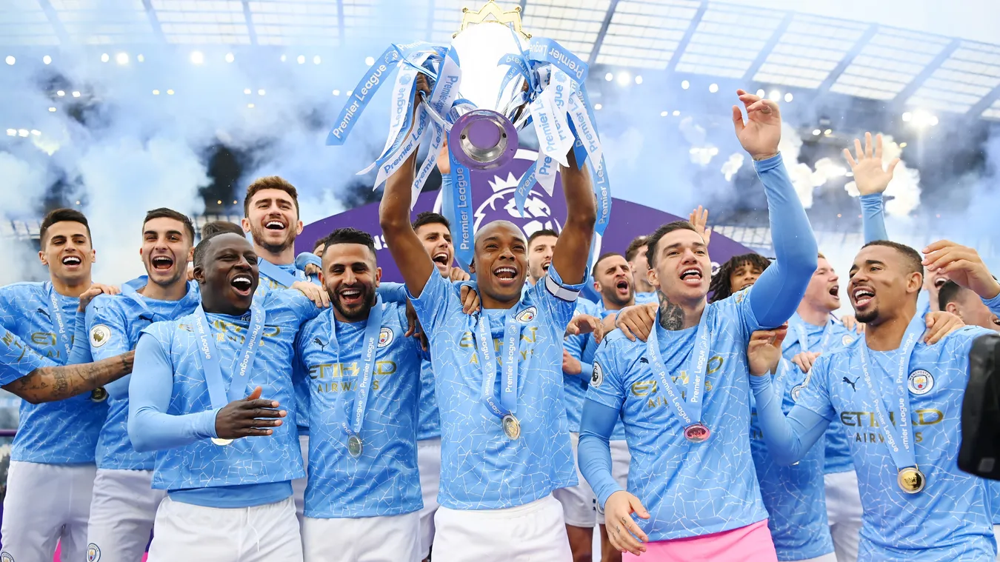
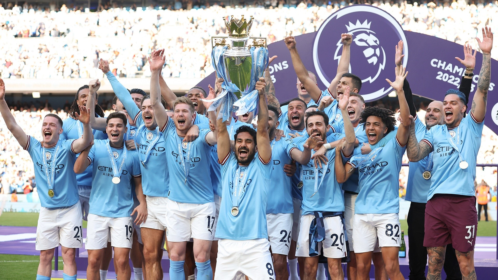

Under manager Joe Royle, City were promoted at the first attempt, achieved in dramatic fashion in the Second Division play-off final against Gillingham. A second successive promotion saw City return to the top division, but this proved to have been a step too far for the recovering club, and in 2001 City were relegated once more. Kevin Keegan replaced Royle as manager in the close season, and achieved an immediate return to the top division as the club won the 2001–02 First Division championship, breaking club records for the number of points gained and goals scored in a single season in the process.
By 2008, Manchester City were in a financially precarious position. Thaksin Shinawatra had taken control of the club the year before, but his political travails saw his assets frozen. Then, in August 2008, City were purchased by the Abu Dhabi United Group. The takeover was immediately followed by a flurry of bids for high-profile players; the club broke the British transfer record by signing Brazilian international Robinho from Real Madrid for £32.5 million.

Continued investment in players followed in successive seasons, and results began to match the upturn in player quality. City reached the FA Cup final in 2011, their first major final in over 30 years, after defeating derby rivals Manchester United in the semi-finals, the first time they had knocked their rival out of a cup competition since 1975. The Blues defeated Stoke City 1–0 in the final, securing their fifth FA Cup and the club's first major trophy since winning the 1976 League Cup. In the same week, the club qualified for the UEFA Champions League for the first time since 1968 with a 1–0 win over Tottenham Hotspur in the penultimate Premier League match.

|
 |
Strong performances continued to follow in the 2011–12 season, with the club beginning the campaign in commanding form, including a 5–1 victory over Tottenham at White Hart Lane and a 6–1 humbling of Manchester United at Old Trafford. Although the strong form waned halfway through the season, and City at one point fell eight points behind United with only six games left to play, a slump by United allowed the blue side of Manchester to draw back level with two games to go, setting up a thrilling finale to the season with both teams going into the last day equal on points (City led by eight goals on goal difference). Despite the Blues only needing a home win against Queens Park Rangers, a team in the relegation zone, they fell 1–2 behind by the end of normal time, leading some of United's players to finish their game, a 1–0 win at Sunderland, celebrating in the belief that they had won the league. However, two goals in injury time – the second by Sergio Agüero in the fourth added minute – resulted in an almost-literal last-minute 3–2 title victory, City's first in 44 years, with which they became only the fifth team to win the Premier League since its creation in 1992. In its aftermath, the event was described by media sources from the UK and around the world as the greatest moment in Premier League history.
 |
 |
 |
In Pellegrini's first season, City won the League Cup and regained the Premier League title on the last matchday of the season. However, the team's league form was less impressive in the next couple of years: although they finished as runners-up in 2014–15, the 2015–16 campaign saw City end up fourth on goal difference, their lowest position since 2010. On the other hand, Pellegrini delivered another League Cup win and, more importantly, he guided City to the Champions League semi-finals, which they narrowly lost to future champions Real Madrid. This was the club's highest-ever finish in the Champions League, but Pellegrini's reign was nonetheless ended in anticipation of City's dream manager.
Pep Guardiola, former head coach of Barcelona and Bayern Munich, was confirmed to become Manchester City's new manager on 1 February 2016, months before Pellegrini finished his term, and has remained in charge to this day. In the Guardiola era, City won the 2017–18 Premier League title with the highest points total in history and broke numerous other club and English league records along the way. They also won the League Cup that season, and Sergio Agüero became the club's all-time leading goalscorer.
The following season, Guardiola guided the club to retain their Premier League and League Cup titles, the first time in history that City had completed any successful title defence. The team then went on to win the FA Cup final and complete an unprecedented domestic treble of English men's titles
 |
 |
 |
City produced another campaign to remember in 2021–22, retaining their league title, following another close title race with Liverpool and making it four titles in five seasons. In another case of "typical City", needing four points from their last two fixtures, the Blues had fallen behind by two goals in both games, only to recover to a 2–2 draw at West Ham, and to a 3–2 home win against Aston Villa in the season finale. These last three goals were all scored in a five-minute blitz between the 76th and 81st minutes, in moments that would sit alongside the famous victories in the 1999 play-off final against Gillingham and the 2011–12 Premier League finale against QPR.
|  |  |
 |
Manchester City trophies
Preamier League
 Preamier League Wins |
FA Cup
 |
EFL Cup  |
Community Sheild  |
UEFA Champions league  |
|---|---|---|---|---|
9 |
7 |
8 |
6 |
1 |